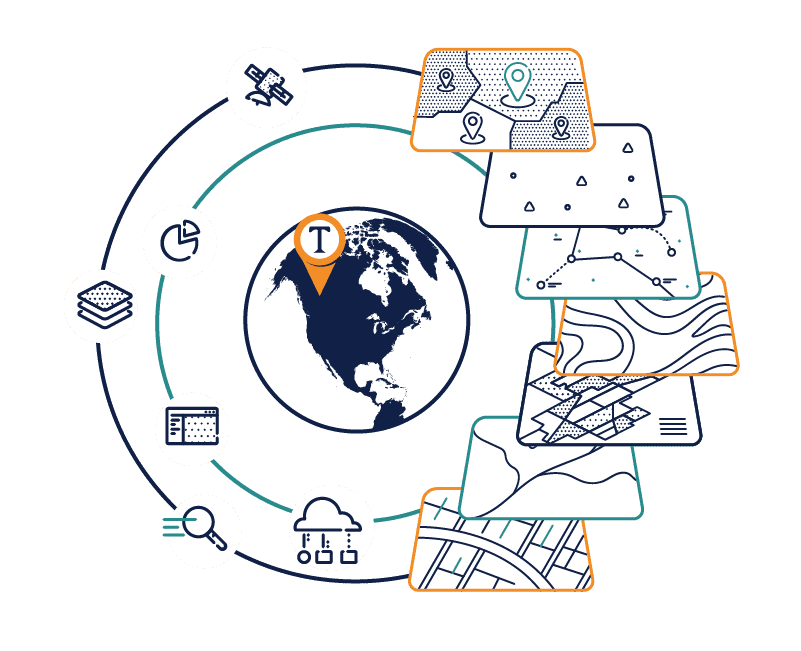

01 · Water resources / Python
Kissimmee Basin Headwater Revitalization
Built a Python ETL pipeline and interactive calibration dashboard for scenario-based H&H modeling. The workflow improved calibration efficiency by approximately 74% and made agency evaluations faster and repeatable.
View analysis work